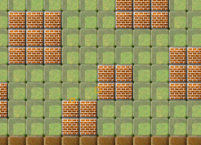
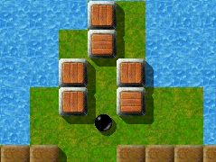

Level des MonatsJeden Monat werfen wir einen näheren Blick auf einen herausragenden Level. Herausragende Levels sind dabei solche, die sich durch die höchsten Bewertungen durch die Spieler auszeichnen, und dabei zugleich von genügend vielen Spielern auch bewertet wurden. Es ist also Ihre Wahl, die den Level des Monats bestimmt. Bitte werten Sie Levels, nachdem Sie sie gespielt haben, und vergessen Sie nicht, die Wertungen zusammen mit Ihren Spielergebnissen zum Ende eines jeden Monats uns zuzusenden. Sie können alle vorigen Level des Monats in unserem Archiv finden. Juli 2007: „Elaborate“ von Jacob ScottKeine Überraschung: wieder ist einer von Duffys Leveln zum „Level des Monats“ gewählt worden! Versteht sich schon fast von selbst, denn Duffy ist einer unserer kreativsten Level Autoren, und seine Schaffenskraft für spektakuläre Level scheint unaufhaltsam zu sein. „Elaborate“ belegt zur Zeit den 3ten Platz in unserem Level des Monats Archiv, mit einem Ergebnis von 8,67 Punkten bei 6 abgegebenen Stimmen.

Enigma V # 65
„Wie der Level Handlungselemente integriert“Duffy hat beides, Action und Puzzles, in diesem umfangreichen, mit 3 Jahren schon etwas betagten Meisterwerk kunstvoll miteinander vermischt. Sicher, die meisten Leute werden zuerst an die Puzzles denken, wenn sie auf „Elaborate“ zurückblicken, aber es bedarf schon einer Maus der Spitzenklasse, um an all den Hindernissen, egal ob schnell oder langsam, vorbeizukommen. Die Aufregungen, die einem dieser Level bereitet, entziehen sich jeder Messbarkeit! „Man weiss nie, was als Nächstes kommen wird“ ist die Devise für „Elaborate“! „Einige Hinweise“Als ich „Elaborate“ zum ersten Mal auf meinem PC gestartet habe, starrte ich wie gebannt auf den Bildschirm, nur mit einer Frage beschäftigt: „Wo fang' ich bloss an?!“ Wenn ihr euch die High-Score-Liste anschaut, werdet ihr feststellen, dass es einige Zeit in Anspruch nehmen wird, diesen Level durch zuspielen. Ich entschied mich schliesslich dafür, das superverwirrende Puzzle im Norden zu vermeiden, und machte mich mit der Kirsche im Gepäck auf den Weg nach Süden. Nach einiger Zeit kam ich in einen Raum mit einem Wassergraben, und in einem Raum weiter südlich fand ich dann einen Brief mit dem beunruhigenden Inhalt: „Es ist nicht ganz so einfach!“ Kurz darauf war's um mich geschehen! Ihr werdet einige Zeit von Raum zu Raum wandern müssen, bis ihr schliesslich die richtige Lösung gefunden habt. Und dann war da noch das Puzzle …

Eines von vielen Rätseln
Die meisten Puzzles sind zwar recht einfach aber dennoch reizvoll, wie zum Beispiel das von mir gemiedene nördlich vom Startpunkt. Wenn aber jemand von euch so schwer von Begriff ist wie ich bei diesem Level, dann sollte er sich wegen Lösungshinweisen lieber an „Moneymaker“ oder „Stupid“ wenden, die wissen wo's lang geht! „Elaborate“ hat auch einen aussergewöhnlich interessanten Beginn: Man ist umgeben von einem Haufen mit Fragezeichen markierter Blöcke, die ein Weiterkommen unmöglich zu machen scheinen! Nicht vielen Leuten scheint das in ihren Level-Kommentaren eine Erwähnung wert zu sein, aber mir fällt auf, dass die ganze Landschaft von „Elaborate“ wohl durchdacht ist und den Eindruck von sicherer Hand entworfen worden zu sein macht. Im Jahr 2004 verfasst ist „Elaborate“ bereits der dritte „Klassiker“ von Duffy, der als „Level des Monats“ ausgezeichnet wird. Und „Elaborate“ ist einer der Level mit den meisten Räumen! Es mag zwar umfangreichere Level geben, wie z.B. unseren ersten LdM „Island Labyrinth“, oder „Map it out“, beide ebenfalls von Duffy, aber all zu viele dürften es nicht sein. „Elaborate“ ist ein weiterer von Duffy's Glanzpunkten, ein fesselnder und anregender Level, der ein Bisschen von Allem in sich vereint. Man beginnt das Spiel umgeben von Fragezeichen - eine passende Metapher für die Art und Weise wie „Elaborate“ aufgebaut ist. Man erforscht und lernt während sich der Level nach und nach vor einem entfaltet. Es hat eine ganze Weile gedauert bis ich herausgefunden habe, wie man die Glassteine in dem Raum südlich vom Startpunkt durchqueren kann. Es ist ganz genau die Art von „Enigma“ , die ich zu lösen liebe. Man ist auf der Reise durch eine neue und interessante Landschaft, zwar sind die einzelnen Elemente vertraut, aber sie werden einem auf ganz neuartige Weise präsentiert. Man muss bis ans Ende der Welt reisen, um all die Werkzeuge zu finden, die man benötigt, bevor man endlich alle Oxyds geöffnet hat. Man muss planen und erinnern, manchmal bedächtig sein, und dann wieder schnell und wendig. Und sei vorsichtig nicht ins Wasser zu fallen, denn wenn du ertrinkst, dann ertrinkst du! Für mich war „Elaborate“ Liebe auf den zweiten Blick.Für mich war „Elaborate“ Liebe auf den zweiten Blick. Mein erster Kontakt mit „Elaborate“ verlief nicht sehr erfreulich: Nachdem ich eine ganze Menge Murmeln an diese Blöcke mit den Fragezeichen (bzw. an deren Transmutationen) verloren hatte, konnte ich mir zwar Zutritt zum zweiten Raum verschaffen, aber dort war ein wegen des Verlustes seiner Lieblingskirsche etwas durchgedrehter Wärter das Letzte, was ich von „Elaborate“ für mehrere Monate zu sehen bekam. Ich ordnete es in die Kategorie „Action-Level“, Klasse „Bad Nightmare“ ein, und beschloss nicht weiter „an diesem Kunstwerk zu arbeiten“. Aber als ich mich vor einiger Zeit, kurz nachdem es mir endlich gelungen war, den Action-Part mit den beiden Rotoren in „Variety Pack“ zu bewältigen (einem weitereren ausgezeichneten Level von Duffy, der einige Ähnlichkeiten mit „Elaborate“ aufweist), dafür entschied, „Elaborate“ einen zweiten Besuch abzustatten, musste ich sehr bald feststellen, dass ich mit meiner ersten Einschätzung gründlich daneben gelegen hatte. Und WIE daneben! Selten habe ich mich bei der Beurteilung eines Levels so sehr geirrt wie bei „Elaborate“. Der „durchgedrehte Wärter“ ist doch 'ne ziemlich lahme Ente und lässt sich leicht austricksen, und selbst der mit „Speed“ angetörnte Knabe in dem Ziegelsteinraum erweist sich als netter Spielkamerad. Aber diese beiden „Action-Parts“ sind (glücklicherweise) die Ausnahme, und der Haupteindruck, den ich mittlerweile von „Elaborate“ gewonnen habe, ist der eines Ortes der Ruhe und Besinnlichkeit. Alles in allem hatte ich das Gefühl, mich auf einer Kunstausstellung zu befinden, während ich in „Elaborate“ von Raum zu Raum wanderte. Jeder der zahllosen Räume präsentiert einzigartige Objekte oder Aufgaben vor dem Hintergrund verschiedenartigster Landschaften! Man muß sich sehr vorsichtig bewegen in „Elaborate“, besonders dann, wenn man einen neuen Raum betritt. Dazu fällt mir eine ziemlich groteske Situation ein: wenn man sich beim Betreten eines bestimmten Raumes sorgloserweise etwas zu schnell bewegt und wenn man einen bestimmten Gegenstand im Gepäck hat, dann geht man in den endlosen Weiten des Weltraums verloren, genauer gesagt man bleibt stecken, weil durch besagten Gegenstand der Reibungswiderstand der unermeßlichen Leere des Raumes ins Unermessliche gesteigert wird. Der blosse Gedanke an diese Szene bringt mich immer noch zum Lachen! Obwohl keines der vorkommenden Probleme für sich genommen als schwierig bezeichnet werden kann, sind die Worte „Es ist nicht ganz so einfach!“ (ein Zitat aus einem Dokument, das man an einem bestimmten Ort findet) doch für „Elaborate“ als Ganzes zutreffend. Und man kann sich nie sicher sein, ob man auch wirklich in allen Räumen gewesen ist bis schliesslich die „Level geschafft“ Meldung erscheint! „Elaborate“ hat die Wahl zum „Level des Monats“ wahrlich verdient. Einmal mehr: Hut ab vor Jacob Scott! Und hier ein paar Worte des Autors zu seinem Werk„Elaborate“ war einer meiner Versuche jüngeren Datums einen neuen Stil von Level zu entwerfen. Anstelle des üblichen Labyrinths mit schmalen Gängen und vereinzelt vorkommenden größeren Elementen, ist in „Elaborate“ alles einfach auf separate Räume verteilt. Dies bedeutet jedoch nicht, dass jeder Abschnitt unabhängig ist - tatsächlich denke ich, dass ein Grossteil des Spielvergnügens daraus resultiert, herauszufinden was man als nächstes tun oder wohin man als nächstes gehen soll. Objekte müssen häufig von dem einen in den anderen Raum gebracht werden, so wird jegliche Art von Linearität aus dem Level entfernt. Ebenso war es meine Absicht, dass die verschiedenen Muster aus Boden- und Wandsteinen für Abwechslung in diesem Level sorgen, und die Grundstimmungen für die einzelnen Abschnitte angeben, ein jeder mit seiner ganz eigenen Struktur und einzigartigem Design.
Auch habe ich versucht einen Level zu kreieren, der eine Vielfalt unterschiedlicher Puzzles und Objekte enthält. Keines der Puzzles ist an und für sich besonders schwierig, aber als Ganzes genommen vermitteln sie einem das Gefühl etwas zu erforschen und den Eindruck, dass sie miteinander in Zusammenhang stehen. „Elaborate“ ist ausserdem einer der wenigen (genau genommen der einzige) Level, in dem „Überraschungs“-Steine und „Überraschungs“-Gegenstände vorkommen, einer ist an einem „hammerhart“ zu erreichenden Ort verborgen, versucht's mal in dem Raum [ … ]lich vom Beginn, der zweite an einer anderen noch etwas „härter“ zugänglichen Stelle. Im Allgemeinen ist es aufgrund ihrer „Zufalls-Eigenart“ ziemlich schwierig die „Überraschungs“-Gegenstände so zu platzieren, dass sie keine „Shortcuts“ ermöglichen. Da aber keine der Regionen in „Elaborate“ all zu komplex ist, und die Lösung für sie alle von mehreren Objekten abhängt, konnte ich diese schon häufig in Vergessenheit geratenen Komponenten verwenden ohne mir über eventuelle „Shortcuts“ Gedanken machen zu müssen. Diese verborgenen Schätze bereichern, wie ich denke, den Level im Sinne der Nonlinearität und der Abenteuerfreiheit.
Wenn ich auf diesen Level zurückblicke, finde ich, dass es mir immer noch Spass macht ihn zu spielen, obwohl er relativ einfach ist, aber ich hoffe doch, es fällt mir nur deshalb so leicht, weil ich mit ihm vertraut bin und alle seine Tricks und Geheimnisse kenne. Ich sehe „Elaborate“ als ein (hoffentlich geglücktes) Experiment an, einen neuen Leveltyp zu entwickeln, mit weniger Betonung auf kleinen aber dennoch „nachtragenden“ Herausforderungen, als viel mehr auf gross angelegten Forschungs- und Entdeckungsreisen. Ich habe in diesem Level nichts entworfen, was als Einzelnes besonders Furcht erregend sein soll, aber all die einzelnen Elemente als Ganzes sollten einen Level bilden, der zwar leicht zugänglich aber nichtsdestotrotz nur mit einiger Anstrengung zu bewältigen ist. Es gibt sicher vielfältige Wege um in „Elaborate“ voranzukommen (was die Jagd auf den Weltrekord bestimmt um einiges interessanter macht), wodurch eine Landschaft entsteht, für die nur schwer eine genaue Spieldauer angegeben werden kann, und deren einzelne Bestandteile sich gegenseitig bedingen, und die dennoch ein annehmbares Schwierigkeitsniveau bietet sowie eine etwas andersartige Sammlung von Herausforderungen zur Unterhaltung bereitstellt. Ich kann es immer noch nicht glauben, dass Duffy über 150 Level verfasst
hat! Das ist ein ganzes Levelpaket und noch ein halbes oben drauf! Duffys
Level haben mich inspiriert, eigene „rätselhafte“ Level zu
entwerfen, und eigene Vorstellungen und Vorlieben zu inszenieren. Schöne Grüße, |